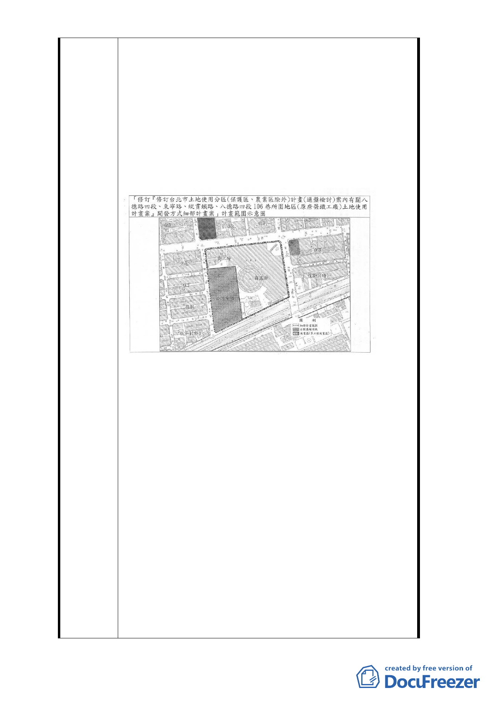

有效率政府應有之表現。
3.依據台北市都市計劃委員會第 646 次會議紀錄所示部分
委員要求應審閱相關歷史資料確認本計畫區內扣除捐贈
公園以外之土地之基準容積率究為 392％或 560％。依
80 年 2 月 13 日公告之都市計畫說明書之記載及相關歷
史資料（78 年 11 月 2 日第六次專案小組會議紀錄及 78
年 10 月 27 日製表『京華再開發計畫案不同使用強度建
築面積比較表』），可明確得知土地之基準容積率應為第
三種商業區 560％【 請參附件二：容積率說明】
附件一
附件二
京華城基地容積率說明
一、現在京華城購物中心是源於民國 76 年威京公司為配
合台北市都市發展而提出「京華再開發計畫」（下稱
再開發案），當時並無捐地之法令依據。
二、經過協議後，「再開發案」於 80/2/13 經台北市政府審
定公告都市計畫說明書，明示本案應捐地三成，整個
基地變更為第三種商業區。第三種商業區之基準容積
率為 560% ，故計畫範圍內土地在捐地 30％後，剩
餘 70％土地的容積率為 560% ，即（70％×560% ）
。
三、但因所捐 30％土地之容積應不能再移給剩餘 70％土
地之用，因此，捐贈 30％土地容積應該要扣除，又因
80/2/I3 都市計畫公告時尚未有捐地行為（86 年 11 月
21 日京都建設開發股份有限公司完成捐地），故公告
時再將剩餘 70％土地按容積率 560％計算之總容積回
除整個塞地面積為 392%，即可得出『容積率依整個
基地計算為 392%（70%x560%）』。
- 25 -